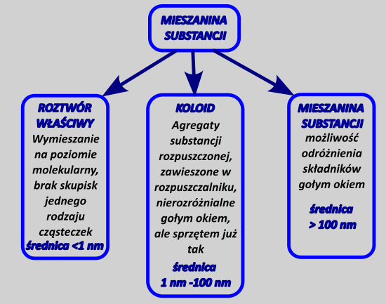
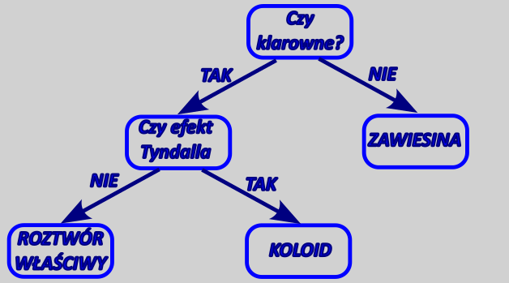

Mieszanina substancji są to oczywiście dwie lub więcej substancji wymieszanych razem. Na skutek mieszania substancji mogę mieć dostać trzy rodzaje układów:

Jeżeli substancje mieszają się tak, że zachodzi wymieszanie ich jest na poziomie molekularnym dostajemy wtedy roztwór właściwy. Roztwór taki jest jednorodny tzn. nieważne jak mały fragment tego roztworu analizujemy jego stężenie jest stałe..
Na skutek wymieszania możemy dostać układ, w którym występują większe skupiska jednego rodzaju cząsteczek, zawieszone w drugim rodzaju cząsteczek. Skupiska cząsteczek mogą powstać na skutek wielkości jednego rodzaju molekuł (np. polimery) lub częściowego „zlepienia się” molekuł. Układy takie nazywamy koloidami lub układami koloidalnymi, warunkiem jego powstania jest wielkość agregatów w zakresie 1 - 100nm. Układ koloidalny jest nierozróżnialny od roztworu właściwego gołym okiem, jednak można go rozpoznać po występowaniu tzw. efektu Tyndalla, czyli rozpraszania światła przez roztwór. Na skutek przyłożenia źródła światła do roztworu zaczynamy obserwować, iż cały roztwór zaczyna „świecić” – rozprasza światło w każdą stronę. Przykładem efektu tyndalla jest „świecenie” mgły pod latarnią
Ostatnim typem jest mieszanina niejednorodna – powstaje ona wtedy, gdy promień większych agregatów jest większa od 100 nm. Składniki takiej mieszaniny są rozróżnialne gołym okiem, jesteśmy w stanie odróżnić jedne skupiska cząsteczek od drugich.
Dla roztworów oraz mieszanin, w których przynajmniej jeden z składników jest ciekły (lub gazowy) mogę odróżnić rodzaj mieszaniny przez postępowanie zgodnie za mieszczonym poniżej grafem:

Możemy przedstawić przykłady różnych układów mieszanin i roztworów uzyskiwanych na skutek utworzenia zmieszania składników roztworu:
| s-rozp /co tworzy | rozpuszczalnik | ||
|---|---|---|---|
| gaz | ciecz | Ciało stale | |
| Gaz/ roztwór własciwy | Np. powietrze \(N_{2}\ i\ O_{2}\) | Roztwór właściwy np. \(CO_{2}\) w wodzie = woda gazowa | To są rzadkie przypadki, ale szczególnie wodór ma tendencje do rozpuszczania się w metalach szlachetnych |
| Gaz/koloid | brak | Np. natleniona mocna woda – taka jak nalewamy z kranu – występuje efekt Tyndalla | Ciężko mi wymyśleć |
| Gaz/ zawiesina | brak | Są to układy bardzo nietrwałe, ale możliwe do wyobrażenia, np. doprowadzenie gazu pompką akwariowa w rozpuszczalniku o dużej lepkości. | Aerożel https://pl.wikipedia.org/wiki/Aero%C5%BCel |
| Ciecz / roztwór własciwy | niemożliwe | Układy tego typu potocznie nazywamy roztworami np. wódka czyli etanol w wodzie. | Niemożliwe, bo ciało stałe usztywniałoby ruch cząsteczek tak, że zatrzymywało poruszenie się cieczy. |
| Ciecz / koloidem | Mgły. Układ, o którym myślimy potocznie jako o mgle jest układem, w którym substancją zawieszoną jest woda, a rozpuszczalnikiem powietrze. | Emulsja. Przykładem jest majonez, albo tłuszcz w wodzie, który nie zdążył się rozdzielić . |
Układ mało popularny, ale możliwy |
| Ciecz / zawiesina | Deszcz albo mżawka | Mieszanina dwóch niemieszających się cieczy, np. benzyna z wodą | Dowolna ciecz (ciekła) wewnątrz zamarzniętego lodu. |
| Ciało stałe / roztwór właściwy | Układ niemożliwy | Roztwór właściwy np. sól czy cukier w wodzie się – rozpuszcza całkiem dobrze. | Stopy metali oraz wszelkie substancje, krystalizują razem z uwagi na podobne promienie jonowe np. tlenki mieszane \[Fe_{3}O_{4} = FeO·Fe_{2}O_{3}\] |
| Ciało stałe/koloidem | Dymy, sadze czyli cząstki ciała stałego zawieszone w gazie. | Zol/ żel – białko jajka kurzego, albo innego typu duże cząsteczki (polimeryczne) zawieszone w wodzie. | Mocno nawęglone żelazo |
| Ciało stałe/ zawiesina | Układ ciężki do uzyskania z uwagi na to, że zwykle ciało stałe opadnie, Możemy rozpylić mąkę w powietrzu, do momentu gdy nie opadnie układ taki będzie zawiesiną | Woda + piasek | Sól + piasek |
Dla koloidów czasem się mówi o zolach, jako koloidach, w których nie mamy sieciowania, czyli że zawieszone cząsteczki poruszają się oddzielnie oraz o żelach jako układach, w których jest sieciowanie, a więc zawieszone cząsteczki są połączone z sobą.
Roztwory możemy podzielić ze względu na nasycenie, czyli czy można jeszcze rozpuścić w nich dodatkową porcję substancji:
- roztwór nienasycony → Kuba jest nienasycony alkoholu= można jeszcze wlać
Roztwór nienasycony to taki, w którym możemy jeszcze rozpuścić więcej danej substancji
- roztwór nasycony → Jak jesteś nasycony alkoholem to więcej nie zmieścisz.
Roztwór nasycony to taki roztwór, w którym mamy już rozpuszczoną maksymalną ilość substancji w danej temperaturze i nie możemy więcej tej substancji w nim rozpuścić. Dodanie dodatkowej porcji spowoduje pozostanie jej nierozpuszczonej
Roztwór przesycony → Jak jesteś przesycony alkoholem to go zwracasz
Roztwór przesycony to jest taki, że jest rozpuszczone więcej substancji niż może teoretycznie w nim się znajdować. Nadmiar tej substancji powinien się wytrącić z tego roztworu (wykrystalizować) w takiej ilości, aby uzyskać roztwór nasycony.
Jak zrobić roztwór przesycony? Maksymalne stężenie danej substancji (czyli ilość substancji rozpuszczonej), które możemy uzyskać, zależy od rodzaju substancji ale również od temperatury. Zwykle substancje stałe są lepiej rozpuszczalne w wysokiej niż niskiej, więc chcąc uzyskać roztwór przesycony najpierw rozpuszczamy substancję w wyższej temperaturze, tak aby można było więcej jej rozpuścić, następnie chłodzimy gwałtownie uzyskany roztwór – zmniejszenie temperatury powoduje zmniejszenie rozpuszczalności, natomiast z uwagi na szybkość chłodzenia substancja „nie nadąża” z krystalizacją.